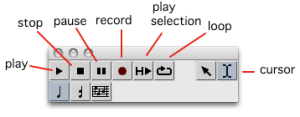
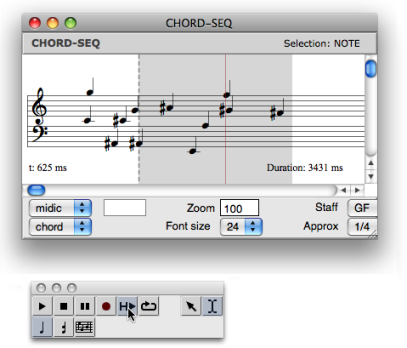

OpenMusic DocumentationHiérarchie de section : OM 6.6 User Manual > Score Objects > Score Editors > Play Controls
OpenMusic DocumentationHiérarchie de section : OM 6.6 User Manual > Score Objects > Score Editors > Play Controls
Navigation : page précédente | page suivante
Attention, votre navigateur ne supporte pas le javascript ou celui-ci à été désactivé. Certaines fonctionnalités de ce guide sont restreintes.
Play Controls

|
The player of the editor palette includes several standard commands. |
About Ports Settings for MIDI Playback
Playing Modes
Play Selection
This command allows to play a selection within an object.
Select the cursor
 .
.Add a marker or select a region in the score editor.
Click on the play selection command
 : the player will either play the object from the marker to the end, or the selected region.
: the player will either play the object from the marker to the end, or the selected region.

Play Loop
This command allows to play a selected region repeatedly.
Select a region with the cursor.
Click on the loop
 and play
and play  commands.
commands.

Record
This command allows to record any sound from a midi device.
Références :
Plan :
Navigation : page précédente | page suivante
A propos...(c) Ircam - Centre Pompidou